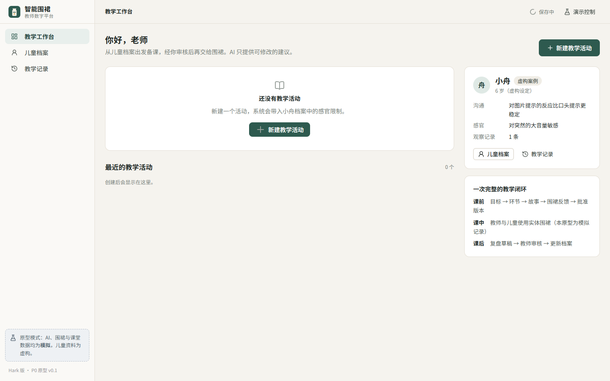
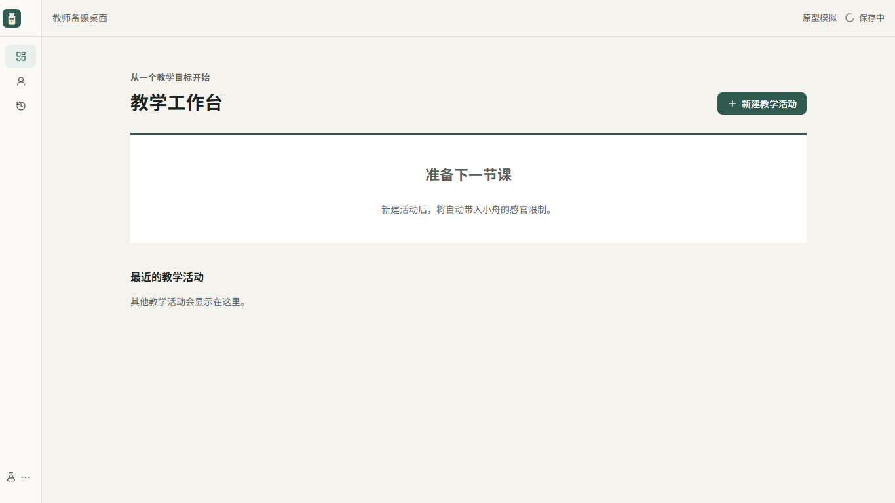
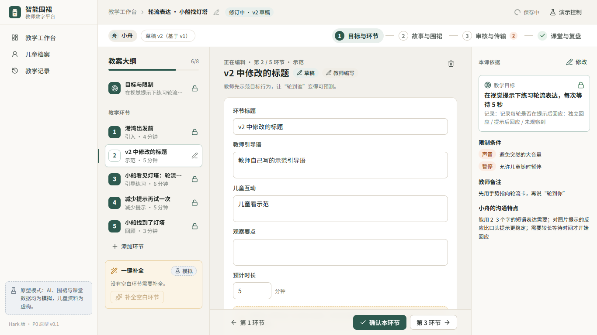
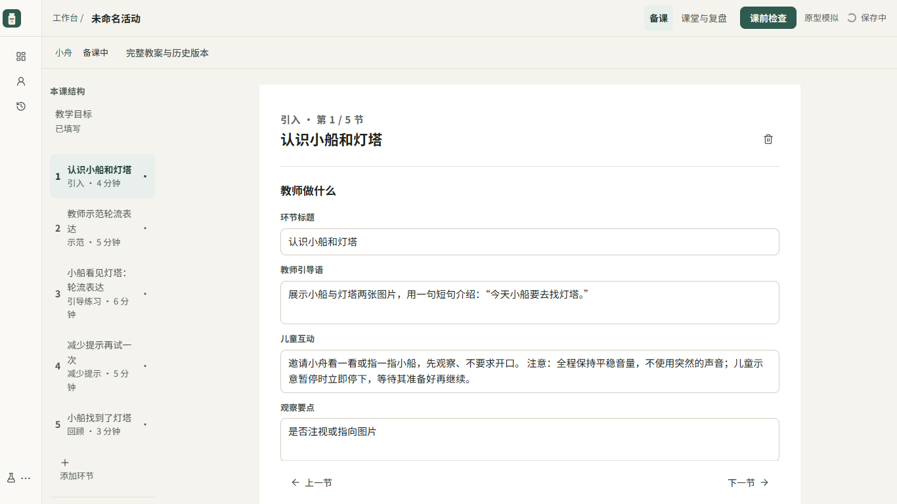
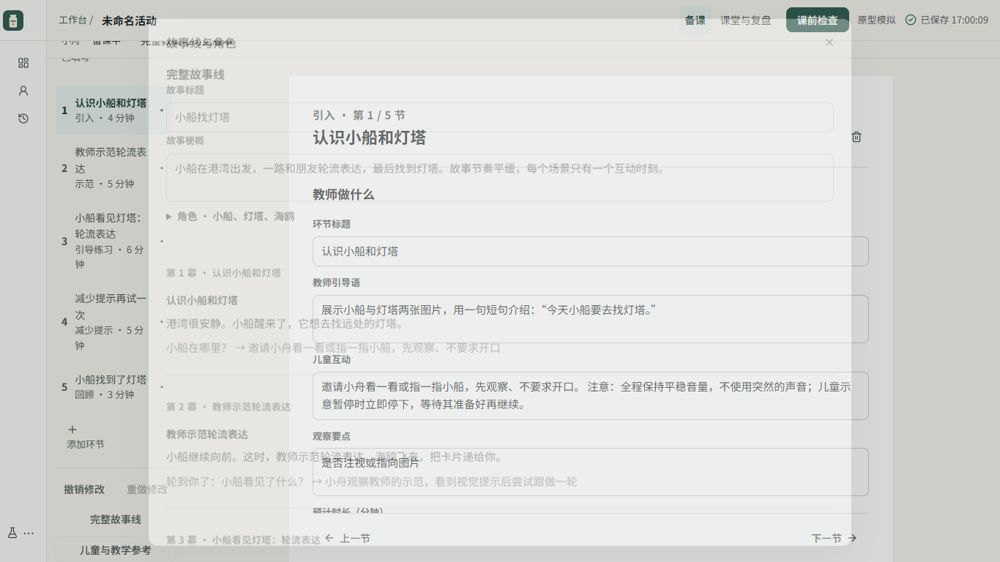
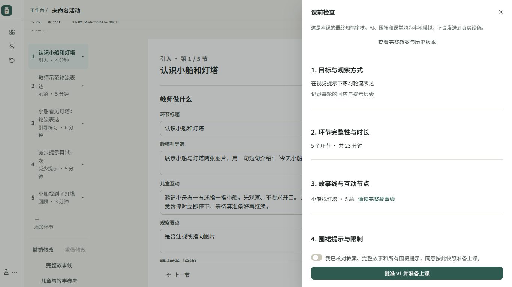
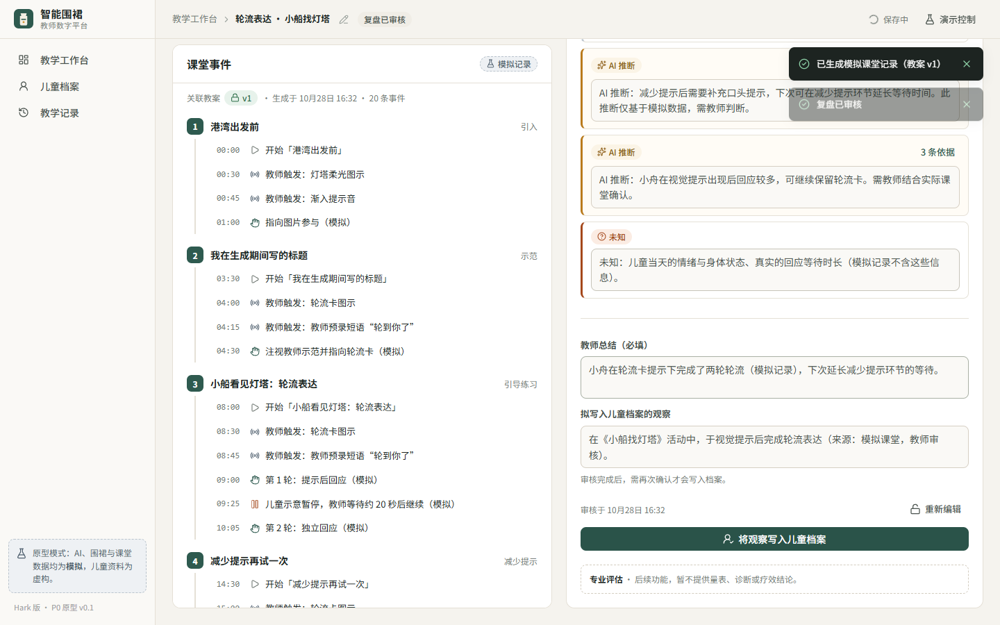
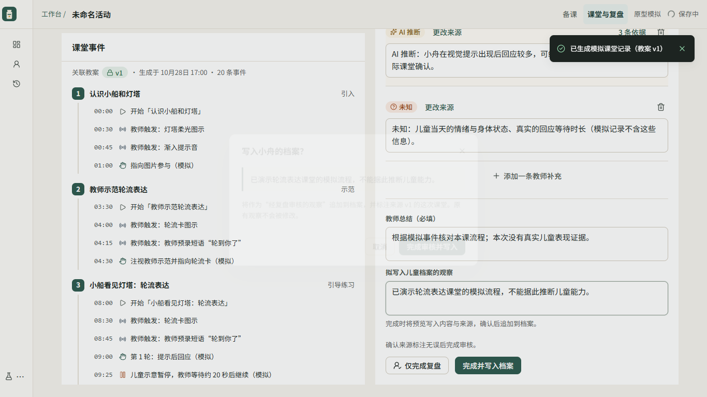

PR #1 · 24b5b8d → codex/hark-ux-refactor
让教师在一份主稿里完成备课
真实本机 Edge 截图。比较信息架构、可用正文宽度与决策位置；不代表真实教师可用性研究。
| 变化 | 原版 | 新版 |
|---|
| 工作模式 | 四阶段 | 备课 / 课堂与复盘 |
| 1366px 正文 | 534px | 760px |
| 活动顶栏与阶段条 | 108px | 56px，元信息另行展示 |
| 最终审核 | 逐项确认后再批准、连接、传输 | 一次课前检查；先持久化快照，再传输 |
工作台
原版：重复创建入口与常驻说明
新版：一个创建入口，教学主任务清晰
备课工作区
原版：固定三栏、逐环节确认
新版：轨道、760px 正文、按需参考
整体故事与课前检查
完整故事线保留整体叙事与角色
最终审核列出实际提示与传输范围
复盘与归档
原版：独立审核和归档步骤
新版：核对证据后一次具体归档预览
完整测试与证据限制 · 打开新版网页